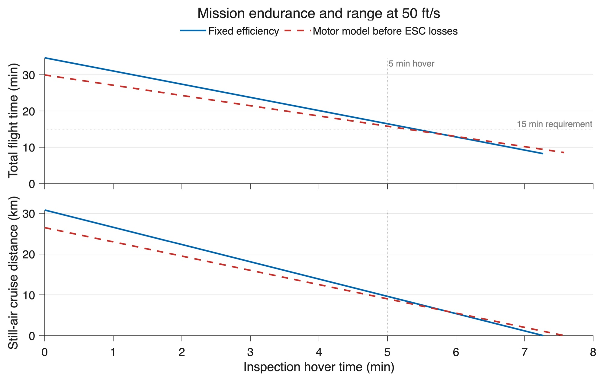
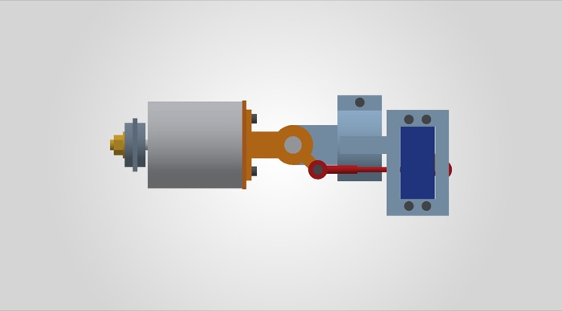
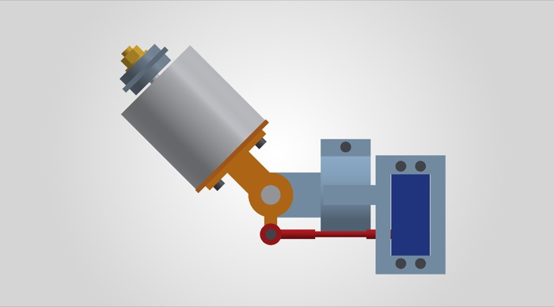
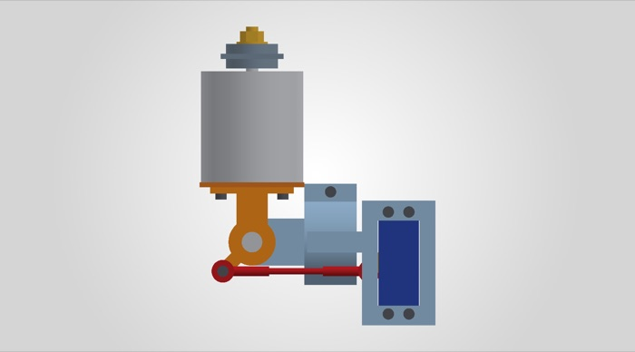
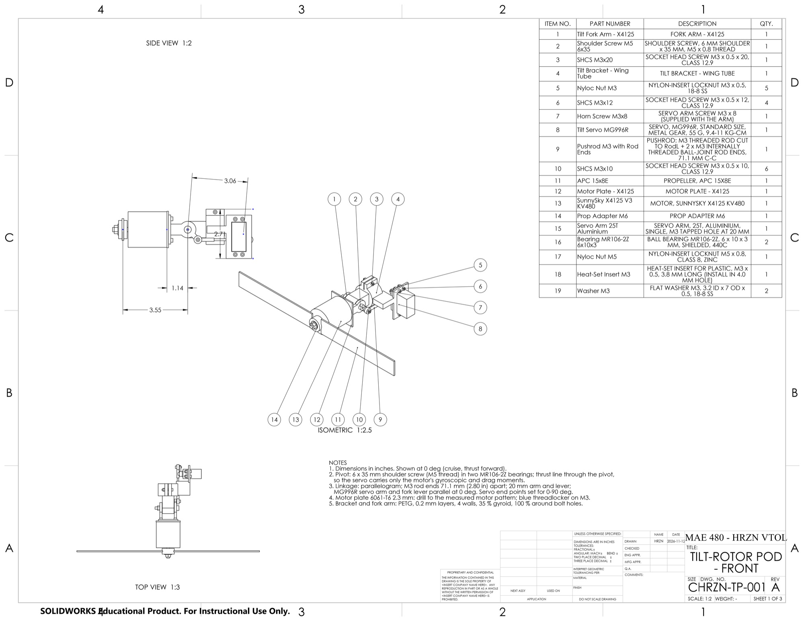

Propulsion lead on a six-person team. I selected the motors, propellers, and battery, wrote the MATLAB propulsion and mission model the team's performance numbers come from, and built the entire SolidWorks model, including the tilt-rotor pods, six engineering drawings, and the manufacturing report.
Objective
Design an aircraft for NASA's Gateways to Blue Skies challenge that can take off and land vertically, cruise efficiently on a wing, and hover for five minutes to inspect a structure with LiDAR and RGB imagery. Requirements include 15 minutes of flight with a 20% energy reserve and fitting in a 60 × 36 × 24 in transport box.


Propulsion system
| Front rotors | 2 × SunnySky X4125 V3 KV480 |
|---|---|
| Rear rotors | 2 × T-Motor AT4120 KV500 |
| Propellers | APC 15×8E (standard and pusher) at all four stations |
| ESCs | 4 × 100 A, mounted in the prop wash |
| Battery | 6S 22.2 V 7200 mAh, 160 Wh |
Performance model (MATLAB)
I built the propulsion and mission model from momentum theory and APC propeller performance data, with motor electrical models for current and voltage. Key results at the 15-lb sizing weight:
- The CG location puts 69% of the hover load on the front pair: 5.2 lbf per front rotor and 2.3 lbf per rear, or 7.8 and 3.5 lbf with a 1.5 sizing factor. The front and rear pairs use different motors to match.
- 927 W in hover and 230 W in cruise at 50 ft/s. A static screen of vendor thrust data gives a thrust-to-weight ratio of about 2.4.
- A full mission (climb, two transitions, 5-minute inspection hover, cruise, 20% reserve) comes out to about 16–17 minutes, meeting the 15-minute requirement at 15 lb. The battery trade study showed heavier packs push the aircraft past its sizing weight, so the 6S 7.2 Ah pack stayed.
- Forward transition takes about 13 s, with peak tilt rates near 62°/s front and 29°/s rear. Those rates set the tilt-servo requirement.

Tilt-rotor pods
Each motor sits on a pivoting fork driven by a servo, pushrod, and lever that rotate it from 0° (forward thrust) to 90° (vertical). The pivot is a 6 × 35 mm shoulder screw on two MR106 bearings, with the thrust line passing through the pivot so the servo carries only the motor's gyroscopic and drag moments, not thrust. The motor plates are 2.3 mm 6061-T6 aluminum; the forks and brackets are printed PETG. Every pod part is fully defined and driven by global variables, so geometry changes update the whole assembly.
Tilt mechanism sweeping 0 → 90 → 0°, animated from the SolidWorks assembly.



Drawings and manufacturing
I produced six engineering drawings: a dimensioned general arrangement with exploded view and BOM, the front and rear pod assemblies, and part drawings for the motor plates, fork arm, and tilt bracket with GD&T per ASME Y14.5. The manufacturing report routes every part to buy, print, machine, or lay up, with McMaster part numbers, costs, print orientations, and an assembly sequence, all achievable with student shop tools.



What's next
The CAD mass-properties check showed the cruise CG about 1.6 in aft of the neutral point, so I flagged it as a required fix before first flight, along with measuring the motor bolt patterns before the plates are machined. Static thrust and ESC testing starts in January 2027, followed by staged hover and full-mission tests.